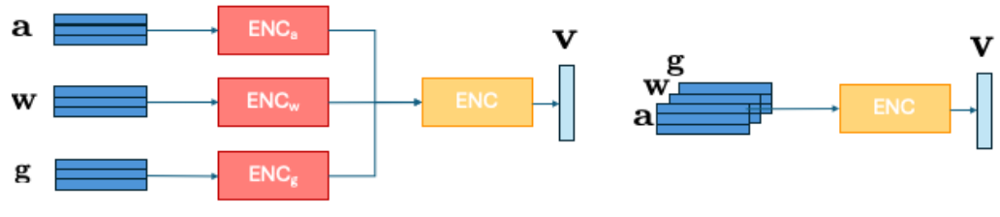
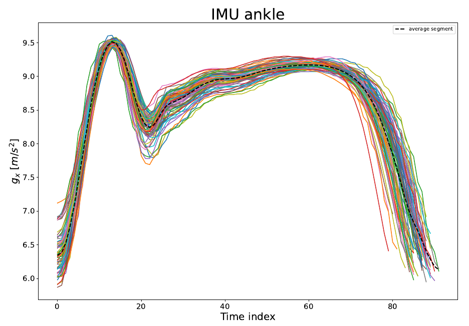
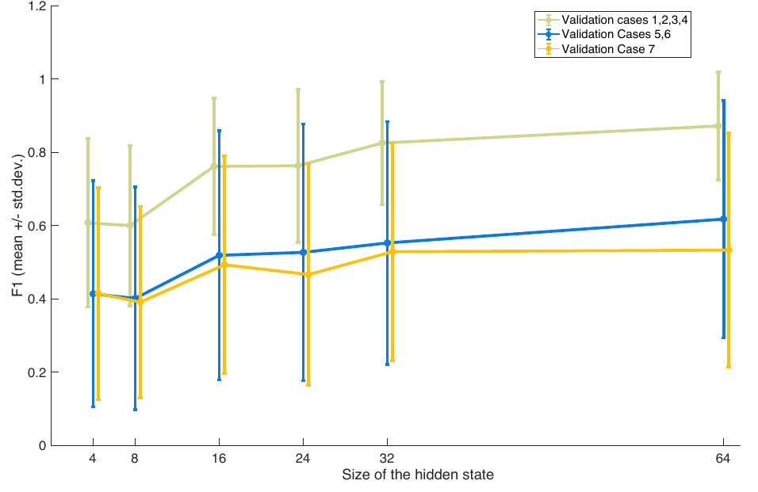

AVSS 2026 Lecce, Italy · August 31–September 3, 2026
Leveraging Smartphone Inertial Data for User Authentication
MaLGa-DIBRIS, University of Genoa, Italy

Abstract
Walking is a fundamental human activity, and gait patterns exhibit distinctive characteristics across individuals, making them suitable for biometric authentication. Recent advances in mobile technology have enabled the integration of Inertial Measurement Unit sensors in smartphones, allowing unobtrusive user authentication using personal devices. In this work, we propose a gait-based authentication framework leveraging inertial data, including acceleration, angular velocity, and gravity, acquired from a smartphone. The multimodal time series are fused and encoded into a latent representation using an LSTM-based autoencoder. A One-Class Support Vector Machine is then trained on this latent space to model the unique walking patterns of each user. Experimental results demonstrate the effectiveness of the proposed approach and highlight its robustness to variations in walking conditions, including scenarios involving gait alterations due to injuries. These findings support the potential of smartphone-based gait authentication as a practical and reliable biometric solution.
Authentication as anomaly detection
The pipeline combines a shared, unsupervised representation with a separate authentication model for each user. Each gait cycle contains the x, y, and z components of acceleration, angular velocity, and gravity: nine input channels in total.
Learn each modality
Three LSTM branches process acceleration, angular velocity, and gravity independently. An autoencoder learns through sequence reconstruction.
Fuse the representations
The branch outputs are concatenated and passed to a global LSTM. The validation study selects a 32-dimensional gait encoding for the final experiments.
Model the individual
A personal One-Class SVM learns the target user's gait distribution. Deviations from that distribution are treated as authentication anomalies.

Training and model selection
Training uses the baseline walking conditions (Cases 1–4). For the autoencoder, 80% of the segments from each time series are sampled for training and 20% for validation. Reconstruction uses mean squared error and the Adam optimizer, with learning-rate reduction and early stopping.
The One-Class SVM uses a sequential split of 64% training, 16% validation, and 20% test segments. Its regularization parameter and decision threshold are selected by validation F1 for each identity. These are segment-level evaluations on the study participants.
The MARCH dataset
MARCH contains treadmill recordings from 50 participants with no motor impairment (26 male and 24 female; age 26.8 ± 2.9 years). A Samsung Galaxy S25 in the left back trouser pocket records acceleration, angular velocity, and gravity at 50 Hz. Each participant completes a five-minute acquisition in each of seven controlled conditions.
- 50participants
- 63,316segmented gait cycles
- 7walking conditions
- 50 Hzsampling frequency
Table I from the paper. Acquisition conditions. Cases 5 and 6 use a 1 kg right-ankle weight to simulate an injury.
| Condition | Speed | Shoes | Ankle weight |
|---|---|---|---|
| Case 1 | 2 km/h | Yes | No |
| Case 2 | 2 km/h | No | No |
| Case 3 | Self-selected, fixed | Yes | No |
| Case 4 | Self-selected, fixed | No | No |
| Case 5 | Self-selected, fixed | Yes | 1 kg |
| Case 6 | Self-selected, fixed | No | 1 kg |
| Case 7 | Variable, predefined | Yes | No |
In Cases 3–6, participants select a comfortable fixed speed between 2 and 5 km/h. Case 7 probes variations in speed and walking-surface slope.
Gait-cycle segmentation
In this initial study, an auxiliary IMU on the right ankle supplies gait-cycle boundaries. Local minima of the ankle gravity signal define the segments; the same time boundaries are applied to the smartphone recordings. Segments are normalized to [0, 1] before processing.

Data access. The MARCH dataset is now publicly available. Access the dataset through the MARCH repository on GitHub.
Experimental results
We compare LSTM and convolutional encoders with middle or early fusion, using 16- or 32-dimensional latent representations. Evaluation covers baseline walking (Cases 1–4), simulated impairment (Cases 5–6), and variable speed and slope (Case 7).
The 32-dimensional LSTM with middle fusion gives the highest mean F1 and lowest mean false acceptance rate (FAR) in all three scenarios. F1 decreases under altered walking conditions, while FAR remains low.
Table II from the paper. Comparison with alternative feature encoders. Values are mean ± standard deviation. Higher F1 and lower FAR are better; bold marks the best mean in each column. FAR is reported as a fraction.
| Encoder (latent size) | Fusion | Cases 1–4: baseline | Cases 5–6: impairment | Case 7: variable speed | |||
|---|---|---|---|---|---|---|---|
| F1 ↑ | FAR ↓ | F1 ↑ | FAR ↓ | F1 ↑ | FAR ↓ | ||
| LSTM (32) | Middle | 0.76 ± 0.18 | 0.004 ± 0.006 | 0.53 ± 0.31 | 0.002 ± 0.003 | 0.44 ± 0.28 | 0.002 ± 0.003 |
| LSTM (16) | Middle | 0.70 ± 0.20 | 0.005 ± 0.006 | 0.50 ± 0.32 | 0.004 ± 0.008 | 0.41 ± 0.29 | 0.003 ± 0.006 |
| LSTM (32) | Early | 0.55 ± 0.24 | 0.02 ± 0.04 | 0.39 ± 0.30 | 0.02 ± 0.03 | 0.32 ± 0.28 | 0.01 ± 0.03 |
| LSTM (16) | Early | 0.55 ± 0.24 | 0.03 ± 0.05 | 0.38 ± 0.29 | 0.02 ± 0.04 | 0.30 ± 0.25 | 0.02 ± 0.04 |
| Conv 1D-2D (32) | Middle | 0.56 ± 0.23 | 0.01 ± 0.02 | 0.33 ± 0.29 | 0.008 ± 0.015 | 0.25 ± 0.22 | 0.006 ± 0.011 |
| Conv 1D-2D (16) | Middle | 0.58 ± 0.22 | 0.01 ± 0.02 | 0.34 ± 0.30 | 0.009 ± 0.021 | 0.28 ± 0.23 | 0.006 ± 0.014 |
| Conv 2D (32) | Early | 0.38 ± 0.21 | 0.06 ± 0.07 | 0.33 ± 0.23 | 0.05 ± 0.06 | 0.32 ± 0.25 | 0.04 ± 0.04 |
| Conv 2D (16) | Early | 0.35 ± 0.21 | 0.09 ± 0.09 | 0.31 ± 0.25 | 0.08 ± 0.08 | 0.28 ± 0.23 | 0.05 ± 0.05 |
All encoders feed a personal One-Class SVM. The highlighted row is the configuration selected for the main experiments. On narrow screens, scroll the table horizontally to compare all scenarios.
Selecting the latent representation
The validation analysis compares hidden-state sizes from 4 to 64 and selects 32 dimensions for the remaining experiments. The plot below reports validation F1; the table above reports test-set performance.

Scope and limitations
This is a feasibility study in controlled treadmill conditions. Impairment is simulated with ankle weights, and gait segmentation uses an additional ankle IMU. Performance varies across participants; the paper identifies two users with consistently poor classification results. Broader real-world evaluation and investigation of these outlier profiles remain future work.
Frequently asked questions
Does the method require labelled identities or impostor data during training?
The shared autoencoder learns a gait representation through unsupervised reconstruction. Each One-Class SVM is then trained on the target user's gait segments, without negative-class examples during that training stage.
Does the study use only a smartphone?
Authentication features come from smartphone acceleration, angular velocity, and gravity. In this initial study, an auxiliary IMU on the right ankle provides gait-cycle boundaries that are transferred to the smartphone recordings.
What do the altered walking conditions represent?
All 50 participants had no motor impairment. Cases 5 and 6 use a 1 kg right-ankle weight to simulate an injury; Case 7 evaluates variable speed and walking-surface slope. These are controlled treadmill experiments.
How can I access the MARCH dataset?
The MARCH dataset is publicly available through the Malga-Vision/MARCH repository on GitHub.
Citation
@inproceedings{bortolai2026smartphone,
title = {Leveraging Smartphone Inertial Data for User Authentication},
author = {Bortolai, Gabriele and Noceti, Nicoletta and Odone, Francesca},
booktitle = {22nd International Conference on Advanced Visual and Signal-Based Systems (AVSS)},
year = {2026}
}Acknowledgements
This work has been supported by the MARCH project (FA86552317074), funded by the Air Force Office of Scientific Research.